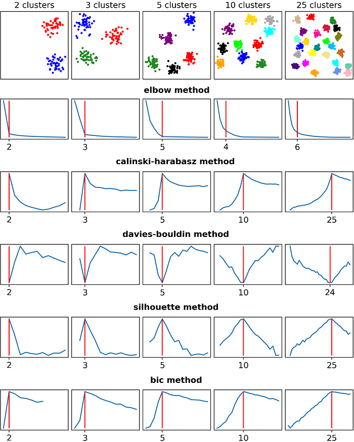

Objectives For Today
- Introduction to Machine Learning
Image Recognition Demo
We'll be exploring the Teachable Machine project from Google to highlight how we are using machine learning to create value.
If you're interested in their Youtube tutorial on how to use the above demo: https://youtu.be/3BhkeY974Rg
Machine Learning (ML) in a nutshell
"What has been will be again,
"what has been done will be done again
"there is nothing new under the sun." Ecclesiastes 1:9 (NIV Bible)
In a nutshell, we take repeatable happenings in a situation and predict with a good confidence that it will happen again, in order to inspire action items that drive value.
- We drive the same streets again and again in our daily commute, where the roads don't change frequently.
- Weather patterns repeat itself year-on-year, where we know what to do so that we make the best out of it.
These patterns present themselves as data to us, and the data can come in many shapes and forms, such as:
- Digits and numbers
- Time
- Images
- Voice recordings
Types of ML
- Supervised Learning
- We already have enough information to know the possible outcomes of a situation, and we are simply trying to improve our accuracy so that our decisions may be as impactful as possible:
- Sports Analytics: Sports are man-made, and the outcomes are already defined witin the game.
- Credit Scoring: How often you loan and repay your debts through your credit cards is relatively predictable.
- Most businesses are in this category.
- Unsupervised Learning
- We don't have enough information to know what are the possible outcomes, but we are collecting and observing the data to know its possible trajectory so that we can make decisions on the data.
- Self-driving cars: We don't know if a car, person, or animal might happen within your path.
- Recommendation systems: Each person is unique, and the outcomes vary per person.
Clustering Explained
Let's open up the file(s) in the 01-Ins_Clusters folder to get started.
In ML, there is no strict answer such as 1 + 1 = 2. Often, you need to understand the theory behind the matter, and align with what you observe and see from the data.
And often, we try to improve our accuracy as we iterate to get the best results.
What is clustering?
- In layman terms, it is a behavior where the data coordinates group together as you collect them.
- In the school's activity, you'll see 3 clusters over a 2D axis.
- Imagine there is a map behind the graph, and the x and y coordinates are latitude and longitude. This can be activity such as dengue fever outbreak or Pokemon Go players gathering around.
In your school notes, the code is nothing special. It is just creating clusters of coordinates randomly over a dual-axis graph.
The K-means Algorithm
Let's open up the file(s) in the 02-Ins_Kmeans folder to get started.
You might need to install these libraries to get your visualization to work:
- Activate your conda dev:
conda activate dev - Run:
conda install -c pyviz hvplot - Then run your Jupyter Notebook:
jupyter notebook
Infering from this tutorial, you're probably wanting to see if there is a relationship between the personal banker rating and mobile app rating.
Through observation, by defining to the machine that there are 2 clusters, the system will automatically try to identify the 2 clusters that are available within the data set.
- This is the strength of machine learning where it will objectively try to identify the center of each cluster using the mean distance between each coordinates.
- You can try to increase the number of clusters to see how it will identify the means.
Breaking down the code
- We define the type of model we want to use. In this case, it is KMeans:
model = KMeans(n_clusters=2, random_state=1) - We then try to fit the data into the model, based on the configurations above:
model.fit(service_ratings_df) - Since this is unsupervised learning, the model will try to predict a set of labels that match the number of clusters available:
customer_ratings = model.predict(service_ratings_df)
Students Do: Segmenting Customers
Break - 15 mins @ 8:05pm
Introduction to Clustering Optimization
In the previous activity, we observed the data with our eyesight and decided how many clusters there are in a data set.
However, is there a better way to determine how many clusters are there in a data set?
The Elbow Method
Let's open up the file(s) in the 04-Evr_Elbow_Method folder to get started.
The elbow method uses inertia to define the number of clusters.
Inertia is calculated by measuring the distance between each data point and its centroid. You want a low number and the inflecion point where the rate of change drastically decreases.
- When the rate of change drastically decreases, it signifies that adding more centroid doesn't necessary mean we have identified more clusters within the data set.
Beyond the Elbow Method (Not part of school notes)
Machine learning is a discipline that requires a lot of study, and a lot of seeing how things work under the hood.
Below is a sample of other clustering optimization methods (credit to https://towardsdatascience.com/are-you-still-using-the-elbow-method-5d271b3063bd):
